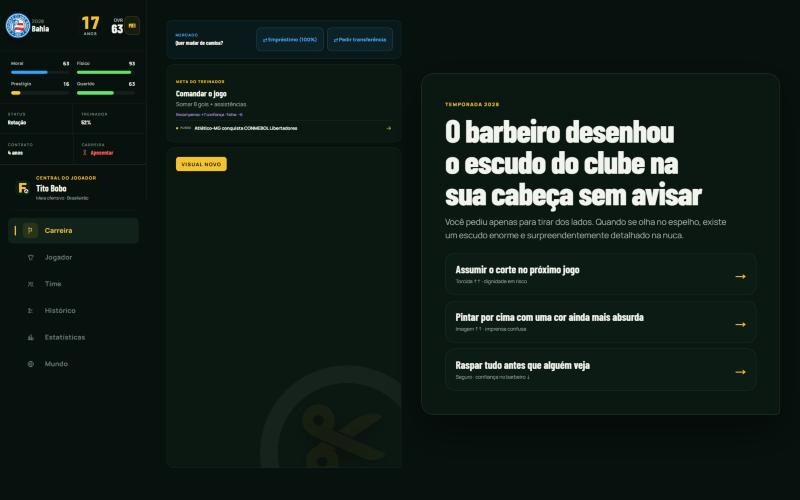
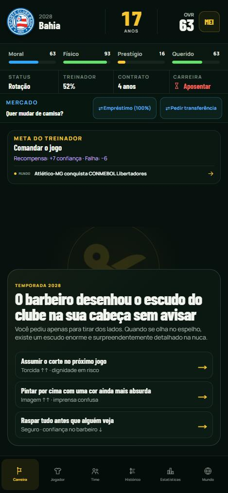

Futbobo
Futbobo
Carreira: oito caminhos
Mesmo jogador, mesma temporada, mesmo capítulo do barbeiro. Muda a ideia, o arranjo e a matéria de que a tela é feita. Cada concept é um único arquivo responsivo: abra no celular para ver a versão mobile de verdade.
Hoje
A mesma partida, capturada em futbobo.top: temporada 2028, Bahia, 17 anos.


- Tudo tem o mesmo peso. Cabeçalho, barras, status, mercado, meta e capítulo são o mesmo cartão escuro com a mesma borda; o olho não sabe onde pousar.
- Os sinais de molde que as skills condenam. Rótulo em caixa alta espaçada em cima de cada bloco, "→" em todo botão, raio único, near-black tingido.
- A arte não diz nada. No desktop, o maior painel da tela é uma marca d'água; no mobile, ela sai. O capítulo, que é o jogo, divide atenção com o mercado.
- A metáfora some. O jogo tem botão, súmula, mercado, torcida e imprensa, mas a tela poderia ser de qualquer app.
Os concepts
Clique numa tela para abrir grande. As miniaturas são as páginas reais rodando, não imagens.
De onde vêm as regras
As skills de design mais usadas hoje, lidas na fonte, e o que cada uma pôs nestes concepts.
| Anthropic frontend-design | Começar pelo vocabulário do mundo do assunto. Gastar a ousadia em um lugar só. Um momento de movimento orquestrado, não fade em tudo. Plano de tokens com 4–6 cores nomeadas antes de codar. Lista de clichês a evitar: caixa alta espaçada em todo bloco, "→" em todo botão, cartões idênticos, cream + serifa + terracota, near-black com um acento ácido. |
|---|---|
| Anthropic, Improving frontend design through skills | Fugir da "convergência distributiva": nada de Inter, Roboto, Open Sans, Lato. Contraste de peso extremo (200 × 900), saltos de tamanho de 3×, uma cor dominante com acento afiado. Por isso cada concept tem uma família própria. |
| Impeccable | Squint test, espaço em base 4, cor por papel, tese de movimento com tabela de durações (100–150 ms feedback, 300–500 ms transição, 500–800 ms entrada autoral), saída mais rápida que entrada, nada de animar width/height. |
| taste-skill | Uma ideia por tela, no máximo dois níveis de caixa, alvos de 44 px, um efeito por página, nada de fade-in por seção, parallax em texto ou roxo. |
| ui-ux-pro-max | Acessibilidade e toque antes de estilo. Casar o estilo com o produto pelo catálogo (Exaggerated Minimalism no Manto, Editorial Grid na Primeira Página, Dimensional Layering na Mesa, Data-Dense no Painel). Ícones em SVG, nunca emoji. |
| Vercel Web Interface Guidelines | Números tabulares, :focus-visible, nunca transition: all, loops acima de 5 s com pausa, raios concêntricos, sombras em camadas, aspas curvas e reticências, prefers-reduced-motion sempre. |